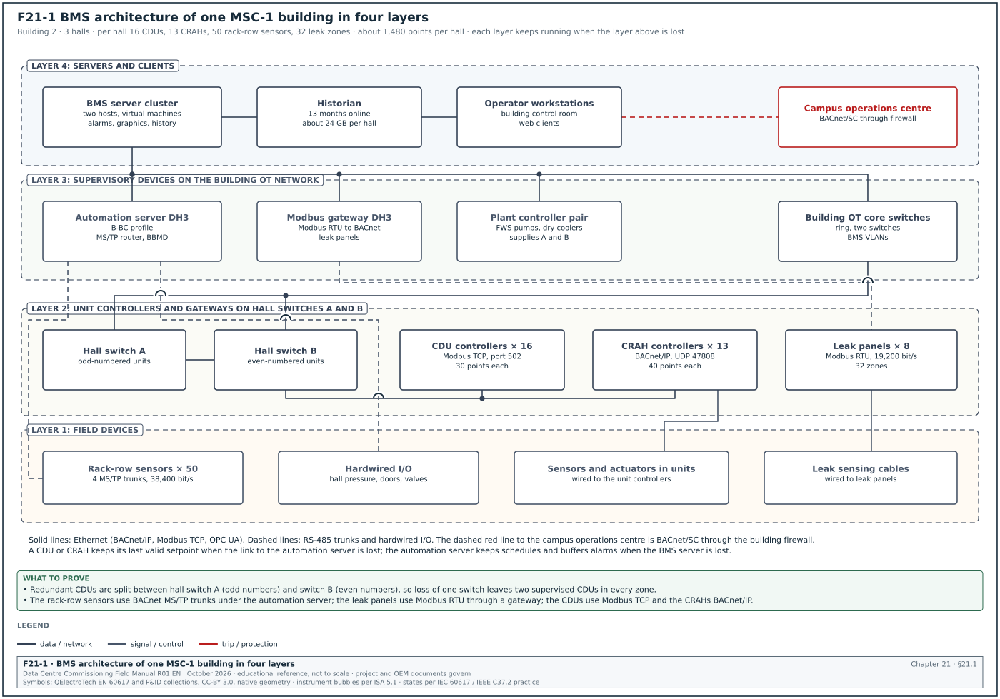
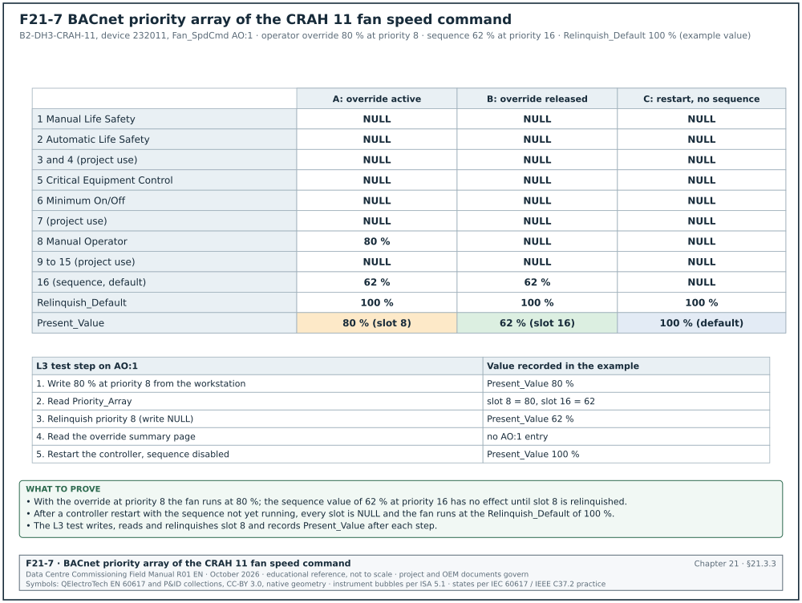
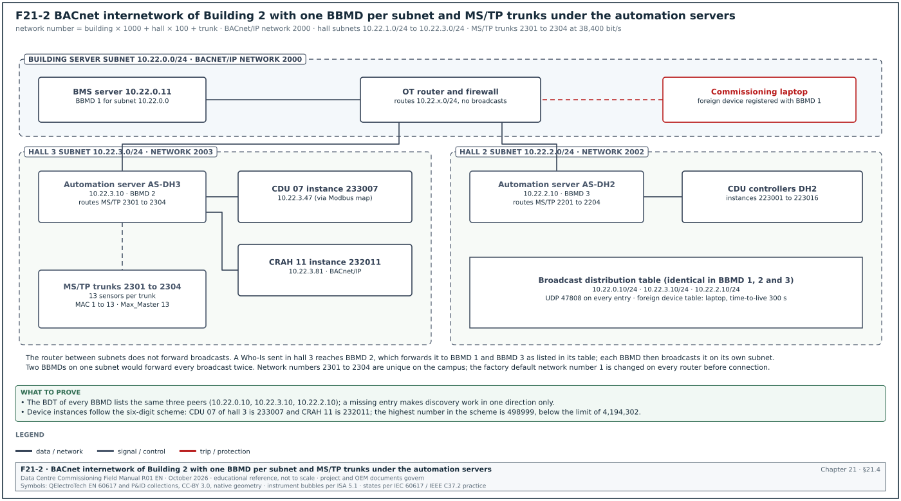
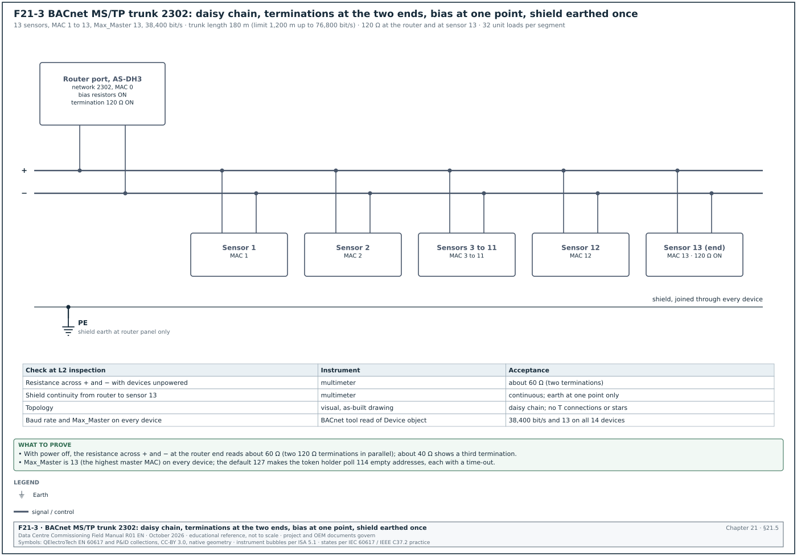
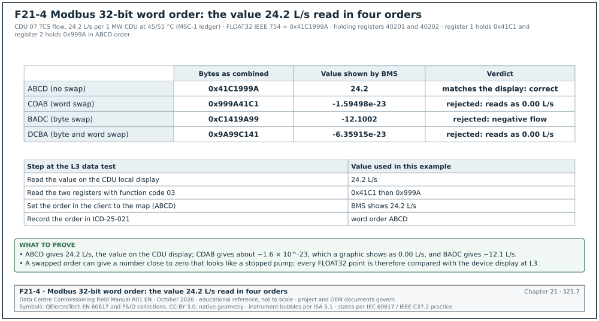
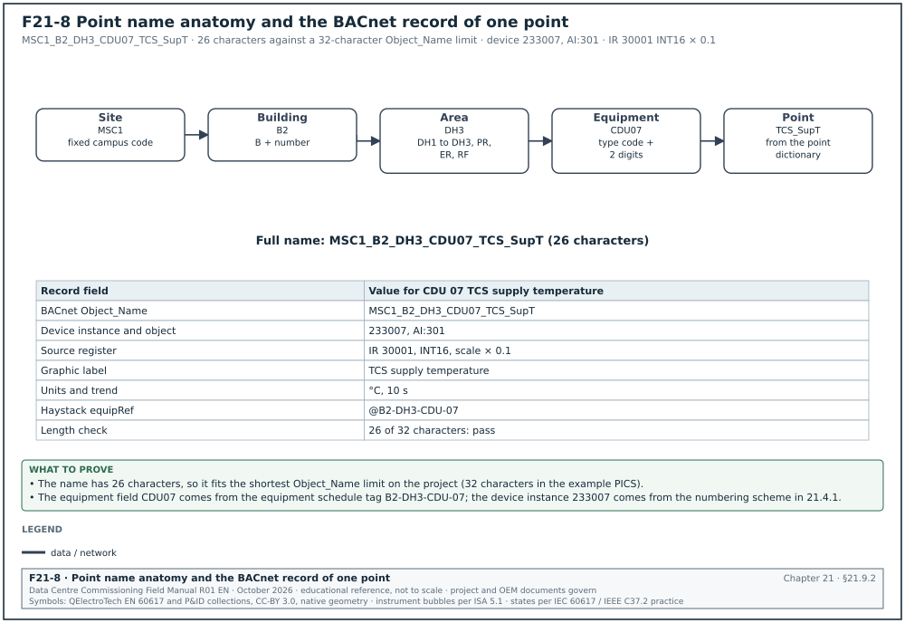
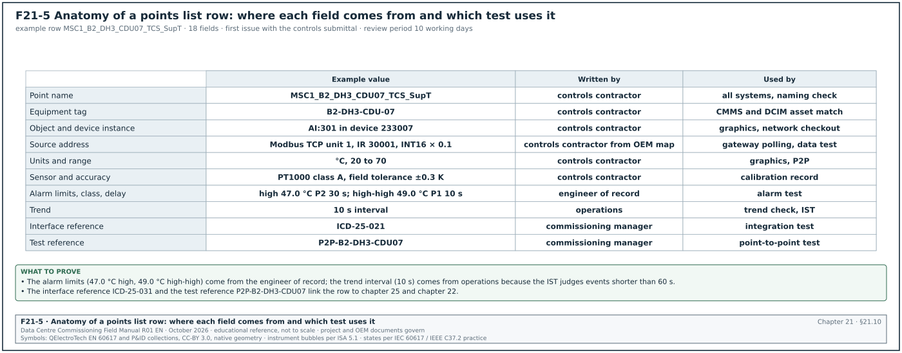
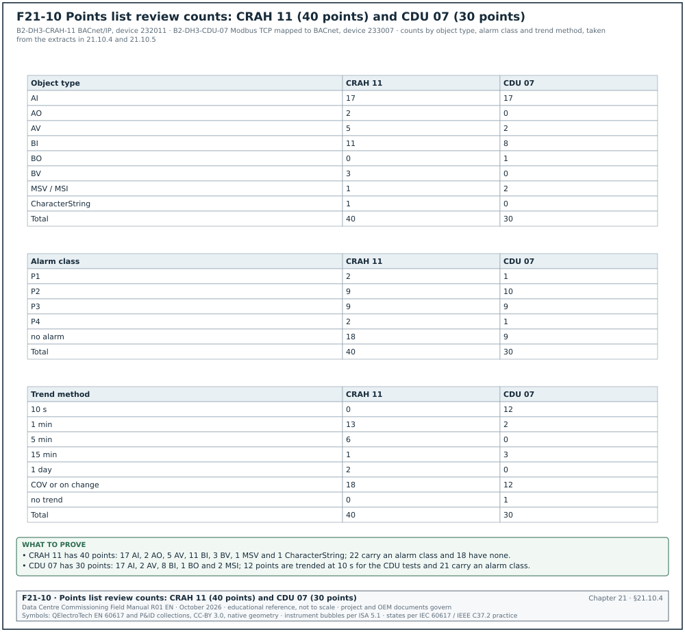
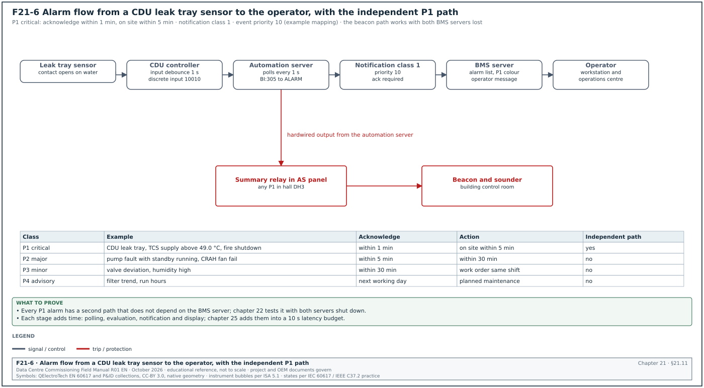
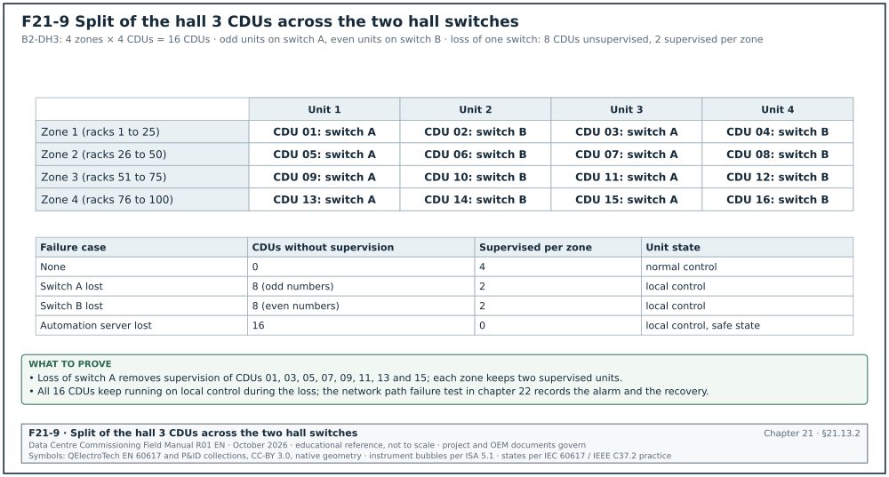

21.0Scope of this chapter
This chapter describes how a building management system (BMS) on a hyperscale data-centre campus is built, which communication protocols it uses, and how the points list is written and checked. Chapter 22 uses this chapter as its reference when it describes the commissioning procedure.
- System layers. The chapter defines the four layers of a BMS (field devices, controllers, supervisory devices, servers and clients) and gives the device counts for one hall of the MSC-1 worked example.
- Protocols. It covers BACnet/IP, BACnet master-slave/token-passing (MS/TP), BACnet Secure Connect (BACnet/SC), Modbus TCP, Modbus RTU, OPC Unified Architecture (OPC UA) and the Simple Network Management Protocol (SNMP), with the values a commissioning manager checks for each.
- BACnet objects and addressing. It lists the object types and properties used in a data-centre BMS, the command priority array, device instance numbering, network numbers and broadcast management.
- Modbus register maps. It explains the four Modbus data tables, register addressing, scaling, 32-bit word order and serial timing, with a polling-time calculation.
- Naming, tagging and the points list. It gives a naming convention, the Project Haystack, Brick and ASHRAE 223P tagging approaches, and the field list of a points list. It gives two filled extracts: one computer room air handler (CRAH) with 40 points and one coolant distribution unit (CDU) with 30 points.
- Alarms, trends, redundancy, graphics and panels. It defines alarm priorities and classes, trend intervals and storage, controller, server and network redundancy, graphics rules, control panel design and power to controls.
- Documents and standards used. ANSI/ASHRAE Standard 135-2024 (BACnet), ASHRAE Guideline 13-2024 (Specifying Building Automation Systems), ASHRAE Guideline 36-2024 (sequences of operation), the Modbus Application Protocol Specification V1.1b3 and the Modbus over Serial Line Specification and Implementation Guide V1.02. The chapter also uses the BACnet Testing Laboratories (BTL) listing, Project Haystack, Brick and the ASHRAE 223P public review draft.
21.1Layers of a data-centre BMS and the MSC-1 device counts


21.1.1The four layers
A BMS is built in four layers. Each layer has its own hardware, its own network and its own failure behaviour. The commissioning manager uses the layer model to decide which test proves which function.
| Layer | Typical devices | Network | What the layer must do when the layer above fails |
|---|---|---|---|
| 1 Field | Temperature, pressure, flow and leak sensors; valve and damper actuators; variable frequency drive (VFD) inputs | Hardwired 4–20 mA, 0–10 V, resistance, dry contact; some on RS-485 | Keep reporting a value; actuators go to their fail position on loss of signal |
| 2 Controller | Direct digital controllers (DDC), programmable logic controllers (PLC), unit controllers inside CRAH and CDU | BACnet MS/TP, BACnet/IP, Modbus RTU or TCP | Run the local sequence on the last valid setpoint |
| 3 Supervisory | Automation servers, network controllers, routers, gateways, BACnet broadcast management devices (BBMD) | BACnet/IP on the operational technology (OT) network | Keep controller-to-controller data, schedules and local alarm buffers |
| 4 Server and client | BMS servers, historian, operator workstations, web clients | Enterprise or OT server network | Restore from backup; no control function depends on this layer |
The rule that a lower layer keeps running when an upper layer is lost is the most important architecture requirement for a data centre. Chapter 22 tests it with loss-of-communication and server failover tests (sections 22.14 and 22.16).
21.1.2What a data-centre BMS controls and what it only monitors
On a hyperscale campus the BMS has three groups of points.
- Points it controls. The BMS commands mechanical plant: CRAH fans and valves, CDU setpoints where the design gives the BMS that authority, dry cooler fans, pumps, trim chillers, ventilation for electrical rooms, battery rooms and generator rooms. Each command has a range limit and a rate limit written in the sequence of operation.
- Points it monitors through integration. The BMS reads data from equipment that has its own controller. Examples are uninterruptible power supply (UPS) alarms, generator status, fuel tank levels, leak detection panels, very early smoke detection apparatus (VESDA) fault and alarm states, and fire alarm summary signals. It does not command these systems unless the interface control document (chapter 25) states the command.
- Points it passes to other systems. The BMS sends mechanical data to the data centre infrastructure management (DCIM) system and to the computerised maintenance management system (CMMS). These are read-only exports.
The electrical power monitoring system (EPMS) is a separate system with its own network (chapters 23 and 24). The BMS receives a small number of EPMS signals, for example "source stable" after a utility transfer, through a defined interface.
21.1.3Device counts for one MSC-1 hall
In the MSC-1 worked example each hall carries 12 MW of information technology (IT) load: 9.6 MW of liquid-cooled load through the technology cooling system (TCS) and 2.4 MW of air-cooled load. Each hall has 16 CDUs of 1 MW each, arranged in 4 zones of 4 CDUs, and 100 racks. The worked example assumes 13 CRAH units per hall for the air-cooled load (168.5 m³/s per hall, about 13 m³/s per unit).
| Equipment per hall | Quantity | Controller type | Protocol to BMS | Points per unit (approx.) | Points per hall |
|---|---|---|---|---|---|
| CDU | 16 | original equipment manufacturer (OEM) unit controller | BACnet/IP or Modbus TCP | 30 | 480 |
| CRAH | 13 | OEM unit controller | BACnet/IP | 40 | 520 |
| Rack-row temperature and humidity sensors | 50 | Sensor network on MS/TP | BACnet MS/TP | 4 | 200 |
| Leak detection zones | 32 | Leak panel | Modbus RTU through gateway | 3 | 96 |
| Hall pressure, room sensors, door contacts | 1 set | DDC | BACnet/IP | 60 | 60 |
| Branch valves and flow meters on the TCS | 16 | DDC | BACnet/IP | 8 | 128 |
| Total per hall | about 1,480 |
A building with 3 halls and its plant (dry coolers, pumps, trim chillers, generators' auxiliaries, electrical-room ventilation) carries about 6,000 to 8,000 BMS points. The campus with 4 buildings carries about 25,000 to 30,000 points. These counts are estimates for the worked example. The approved points list of the project is the governing count.
21.2Protocols used in a data-centre BMS
21.2.1Protocol selection table
| Protocol | Physical layer | Where it is used on the campus | Addressing | Values to check |
|---|---|---|---|---|
| BACnet/IP | Ethernet, User Datagram Protocol (UDP) | Controller to supervisory and server; CRAH and CDU unit controllers | Device instance, IP address, UDP port 47808 | One BBMD per subnet; network number unique |
| BACnet MS/TP | RS-485 twisted pair | Room sensors, small fan controllers, legacy devices | Medium access control (MAC) address 0–127 for masters | Baud rate, Max_Master, termination, unit loads |
| BACnet/SC | Ethernet, Transport Layer Security (TLS) over WebSocket | Links that cross a firewall or a building boundary | Virtual MAC, device universally unique identifier (UUID), hub uniform resource identifier (URI) | Certificates, primary and failover hub |
| Modbus TCP | Ethernet, TCP port 502 | UPS, generator controllers, CDU, meters, fuel system | IP address and unit identifier | Register map version, word order, polling rate |
| Modbus RTU | RS-485 | Leak panels, small meters, VFDs, fuel pumps | Slave address 1–247 | Baud rate, parity, termination |
| OPC UA | Ethernet, TCP port 4840 | PLC-based plant (trim chillers, water treatment) | Endpoint URL, node ID | Security policy, certificate trust |
| SNMP | Ethernet, UDP 161 and 162 | UPS network cards, rack power distribution units (PDU), switches | IP address, object identifier (OID) | SNMP version 3, notification receiver address |
Source: UDP 47808 is from Siemens Desigo engineering help. MS/TP addresses are from the Chipkin BACnet discovery reference, and Modbus TCP port 502 is from the Chipkin Modbus TCP reference. OPC UA port 4840 is from the Internet Assigned Numbers Authority (IANA) port registry. SNMP ports are from the WinCC OA driver documentation (see research note RF-21).
21.2.2BACnet/IP
BACnet/IP carries BACnet messages in UDP packets on port 47808 (hexadecimal BAC0). BACnet uses broadcasts for device discovery (Who-Is and I-Am) and for some alarm messages. IP routers do not forward broadcasts. A BBMD on each IP subnet receives local broadcasts and forwards them to the BBMDs listed in its broadcast distribution table (BDT). Section 21.4.4 gives the BBMD rules.
21.2.3BACnet MS/TP
BACnet master-slave/token-passing (MS/TP) runs on an RS-485 pair. Masters pass a token. A device may send only while it holds the token. The trunk speed is set by the slowest device and by cable length. Section 21.5 gives the physical design values.
21.2.4BACnet Secure Connect
BACnet/SC is a secure data link layer defined in Annex AB of ANSI/ASHRAE 135. It was added by Addendum 135-2016bj and has been part of the standard since the 2020 edition. Each node opens an outbound WebSocket connection, protected by TLS version 1.3, to a hub. Both ends authenticate each other with X.509 certificates. A node holds a primary hub address and, optionally, a failover hub address. The standard does not fix a port number. Port 443 is the common choice because enterprise firewalls already allow it.
On a data-centre campus BACnet/SC is used where BACnet traffic must cross a security boundary, for example from a building OT network to a campus operations centre. Inside a hall the usual design is BACnet/IP on a segmented OT network, because many OEM unit controllers do not yet support BACnet/SC. The commissioning manager checks the controller data sheets and the BTL listing for BACnet/SC support before the design is frozen.
21.2.5Modbus TCP and Modbus RTU
Modbus is a request and response protocol. A client (master) reads or writes a server (slave). The server never sends data unless it is asked. The BMS sees a change only at the next poll. Modbus has no standard object model, no units, no alarm service and no time stamp. All meaning comes from the OEM register map. Section 21.7 describes the register map in detail.
21.2.6OPC UA and SNMP
OPC UA is used where a plant PLC (for example a water treatment skid or a trim chiller plant controller) exposes its data as an information model. The BMS connects to an endpoint such as opc.tcp://10.20.4.15:4840. The security policy (for example Basic256Sha256 with Sign and Encrypt) and the certificate exchange are part of the interface control document.
SNMP is the native monitoring protocol of UPS network management cards, rack PDUs and network switches. The BMS or DCIM polls on UDP 161 and receives SNMP notifications on UDP 162. On a hyperscale programme the usual practice is to allow only SNMP version 3 with authentication and encryption. SNMP version 1 and version 2c send the community string in clear text.
21.3BACnet objects, properties, services and device profiles
21.3.1Object types used in a data-centre BMS
ANSI/ASHRAE 135-2020 defines 62 standard object types (the count the source quotes; the adopted edition is ANSI/ASHRAE 135-2024). A data-centre BMS uses about 15 of them in daily work.
| Object type | Abbreviation | Typical data-centre use | Properties checked at commissioning |
|---|---|---|---|
| Analog Input | AI | CDU supply temperature, CRAH return air temperature, differential pressure | Present_Value, Units, Status_Flags, Reliability, COV_Increment |
| Analog Output | AO | Valve position command, fan speed command | Present_Value, Priority_Array, Relinquish_Default, Units |
| Analog Value | AV | Setpoints, calculated values (for example hall average inlet temperature) | Present_Value, Out_Of_Service, Units |
| Binary Input | BI | Pump run status, filter switch, leak contact | Present_Value, Polarity, Active_Text, Inactive_Text |
| Binary Output | BO | Pump start command, damper open command | Priority_Array, Minimum_On_Time, Minimum_Off_Time, Relinquish_Default |
| Binary Value | BV | Enable flags, mode flags, alarm reset | Present_Value, Active_Text |
| Multi-state Input | MSI | CDU operating state reported by the unit controller | State_Text, Number_Of_States |
| Multi-state Value | MSV | Operating mode (Auto, Manual, Maintenance, Off) | State_Text, Priority_Array |
| Trend Log | TL | Logging of a point at a fixed interval or on change of value | Log_Interval, Buffer_Size, Stop_When_Full, Enable |
| Trend Log Multiple | TLM | Logging of several points with one time stamp | Log_DeviceObjectProperty list |
| Notification Class | NC | Routing of alarms to recipients by priority | Priority, Ack_Required, Recipient_List |
| Event Enrollment | EE | Alarm on a property that has no intrinsic reporting | Event_Type, Event_Parameters |
| Schedule | SCH | Time-based mode changes (rare in a data hall; used for offices and generator room ventilation tests) | Weekly_Schedule, Exception_Schedule |
| Calendar | CAL | Holidays for the schedules | Date_List |
| Device | DEV | One per controller | Object_Identifier, Max_Master, Max_Info_Frames, Firmware_Revision, Application_Software_Version |
Source: object type count from the BACnet Wikipedia entry quoting ANSI/ASHRAE 135-2020; property names from ANSI/ASHRAE 135 as reproduced in the OPC Foundation BACnet companion specification (OPC 30030).
21.3.2Properties that cause most commissioning findings
- Units. The Units property must match the points list. A CDU flow point that reports litres per minute while the points list says litres per second gives a value 60 times too large on the graphic. The point-to-point test in chapter 22 compares the unit text on the graphic with the reference instrument.
- Status_Flags and Reliability. Status_Flags has four flags: IN_ALARM, FAULT, OVERRIDDEN and OUT_OF_SERVICE. Reliability gives the reason for a fault, for example OPEN_LOOP or OVER_RANGE. A graphic must show a value with a fault flag differently from a good value.
- Out_Of_Service. When Out_Of_Service is TRUE, the Present_Value can be written by hand and does not follow the physical input. A point left out of service after commissioning reports a false value with no alarm. The pre-handover check in section 22.19 lists every object with Out_Of_Service TRUE.
- COV_Increment. The change-of-value (COV) increment decides when a subscribed client receives a new value. A COV increment of 1.0 °C on a CDU supply temperature hides a 0.8 K drift. On a data-centre point the usual increment is 0.1 K for temperature and 1 % of span for pressure and flow (example values; the project specification sets the increments).
- Polarity. Polarity on a binary input inverts the reading. A normally closed leak contact needs the polarity that makes "leak" read ACTIVE.
21.3.3The command priority array
Commandable properties, such as the Present_Value of an Analog Output or a Binary Output, have a priority array with 16 slots. Slot 1 has the highest priority. The device uses the value in the highest-priority slot that is not NULL. When every slot is NULL the device uses the Relinquish_Default value. Figure F21-7 shows the priority array of the CRAH 11 fan speed command (AO:1) in three states. The example values are an operator override of 80 % at priority 8, a sequence value of 62 % at priority 16 and a Relinquish_Default of 100 %.


| Priority | Name in ANSI/ASHRAE 135 | Typical data-centre use |
|---|---|---|
| 1 | Manual Life Safety | Fire brigade override panel (if the design uses BACnet for it) |
| 2 | Automatic Life Safety | Smoke control commands from the fire alarm interface |
| 3, 4 | Not assigned | Project use, for example emergency power-off (EPO) related ventilation stop |
| 5 | Critical Equipment Control | Equipment protection, for example pump minimum flow protection |
| 6 | Minimum On/Off | Minimum run and stop times on binary outputs |
| 7 | Not assigned | Project use |
| 8 | Manual Operator | Operator override from the workstation |
| 9–16 | Not assigned | Sequences of operation, for example at 10 to 16; 16 is the default when a write has no priority |
Source: OPC Foundation OPC 30030 clause 3.2.1 and Chipkin "What is a BACnet priority array" (RF-21 entry 18).
Common errors:
- Override left at priority 8. An operator override at priority 8 stays in place after the operator logs off. The sequence at priority 16 cannot move the output. The BMS must show every point with an active priority 8 value on an override summary page.
- Sequence writes at the wrong priority. If two programmes write the same output at the same priority, the output takes the value of whichever programme wrote last. The controls submittal must state the priority used by each programme.
- Relinquish_Default left unchecked. The Relinquish_Default of a CRAH fan speed output decides what the fan does after a controller restart before the sequence runs. A value of 0 % stops the airflow. The points list must state the Relinquish_Default for every output.
21.3.4Services used in daily work
| Service | What it does | Where the commissioning manager sees it |
|---|---|---|
| Who-Is / I-Am | Device discovery | Network checkout; a missing I-Am means the device is not on the network |
| Who-Has / I-Have | Find an object by name | Duplicate name checks |
| ReadProperty, ReadPropertyMultiple | Read values | Graphics and trends; ReadPropertyMultiple reduces traffic |
| WriteProperty | Write values and priorities | Setpoint changes, overrides |
| SubscribeCOV | Ask a device to send changes | Fast graphics updates; check subscription limits in the protocol implementation conformance statement (PICS) |
| ConfirmedEventNotification / UnconfirmedEventNotification | Alarm delivery | Alarm testing in section 22.11 |
| AcknowledgeAlarm | Operator acknowledgement | Alarm testing |
| TimeSynchronization / UTCTimeSynchronization | Set controller clocks | Time synchronisation in section 22.17 |
| ReinitializeDevice | Warm or cold restart | Controller restart tests; must be password-protected |
| DeviceCommunicationControl | Stop and start a device's communication | Must be password-protected |
| AtomicReadFile / AtomicWriteFile | Backup and restore | Backup restore test |
21.3.5Device profiles, PICS and BTL listing
ANSI/ASHRAE 135 Annex L defines device profiles. Each profile is a set of BACnet interoperability building blocks (BIBB) from Annex K. A manufacturer declares the profile and the BIBBs it supports in a protocol implementation conformance statement (PICS).
| Profile | Name | What the profile includes | Typical data-centre device | What to check in the PICS |
|---|---|---|---|---|
| B-BC | BACnet Building Controller | Data sharing, alarm management, scheduling, trending, backup and restore | Automation server, network controller | COV support and the maximum number of subscriptions |
| B-AAC | BACnet Advanced Application Controller | Data sharing, alarms, schedules; no trending or backup requirement | Programmable plant controller | trending and backup, if the design needs them |
| B-ASC | BACnet Application Specific Controller | Serves values, accepts writes, responds to discovery | CRAH or CDU unit controller, room sensor | writable properties and the object name length |
| B-OWS | BACnet Operator Workstation | Operator display and command | BMS workstation software | alarm acknowledgement and command BIBBs |
| B-AWS | BACnet Advanced Operator Workstation | Configuration in addition to operation | Engineering workstation | configuration and backup BIBBs |
A B-BC device is not required to support COV subscriptions. The commissioning manager reads the PICS of every device type and does not assume COV support from the profile name.
The BACnet Testing Laboratories (BTL) programme of BACnet International tests products against the BTL test package. Certified products carry the BTL Mark and appear in the online BTL Listing. The test organisations are ISO 17025 accredited. On a hyperscale programme the usual practice is to require a BTL listing for every controller and gateway, and to record the listed firmware revision. A controller delivered with a different firmware revision from the listed one is a submittal deviation.
21.4BACnet addressing: device instances, network numbers and broadcast management


21.4.1Device instance numbering
Every BACnet device has a device instance number between 0 and 4,194,302. The number must be unique across the whole internetwork. On a campus with four buildings this means one numbering scheme for the campus, set before any controller is configured.
Worked example: The MSC-1 scheme uses six digits: building (1 digit), hall (1 digit, 0 for building plant), system code (1 digit) and unit number (3 digits).
| Digit position | Meaning | Values |
|---|---|---|
| 1 | Building | 1 to 4 |
| 2 | Hall | 0 = building plant, 1 to 3 = data halls, 9 = campus central plant |
| 3 | System code | 1 = supervisory, 2 = CRAH, 3 = CDU, 4 = TCS valves, 5 = sensors, 6 = leak and gateways, 7 = electrical-room ventilation, 8 = dry coolers and pumps |
| 4–6 | Unit number | 001 to 999 |
The CDU number 7 in Building 2, hall 3 is device instance 233007. The CRAH number 11 in the same hall is 232011. The highest number in the scheme is 498999, far below the limit of 4,194,302.
Check: Before the first controller is loaded, the controls contractor sends the device instance register (one row per device) to the commissioning manager. The commissioning manager sorts the register by instance number and confirms there is no duplicate. After installation, a BACnet discovery (Who-Is with no range) is compared with the register.
21.4.2Network numbers
Each BACnet network (each IP subnet that carries BACnet, each MS/TP trunk, each BACnet/SC hub network) has a network number. Routers use the network number to forward messages. Configuration tools accept network numbers from 1 to 65534 (Distech ECLYPSE REST API, NetworkNumber minimum 1 and maximum 65534). The value 65535 (X'FFFF') is the global broadcast destination network number (ANSI/ASHRAE 135 clause 6, network layer). The BACnet committee addendum 135-2016bx states the rule: ("A global broadcast, indicated by a DNET of X'FFFF', is sent to all networks through all routers").
Worked example: The MSC-1 scheme sets network number = building × 1000 + hall × 100 + trunk number. Building 2 BACnet/IP network is 2000. MS/TP trunk 2 under the automation server of hall 3 is network 2302.
Common errors:
- Same network number on two trunks. Two MS/TP trunks on different routers with the same network number make routers send messages to the wrong trunk. Devices appear and disappear in discovery.
- Factory default network number 1. Many routers ship with network number 1. A second router left at the default creates a duplicate. The network checkout in section 22.5 reads the network number from every router.
21.4.3IP addressing for BACnet/IP
The OT network design (chapter 26) allocates one subnet per building and per function. A typical allocation is one /24 subnet for the BMS supervisory devices of each building and one /24 for each hall's unit controllers. The BMS IP address register has these fields: device tag, device instance, IP address, subnet mask, gateway, virtual local area network (VLAN) number, switch and port, and BBMD role (yes or no).
21.4.4BBMD and foreign device registration rules
- One BBMD per subnet. Each IP subnet that carries BACnet/IP and needs broadcasts from other subnets has exactly one BBMD. Two BBMDs on one subnet forward each broadcast twice and can create broadcast loops.
- Identical broadcast distribution tables. Every BBMD in the internetwork holds the same BDT, listing every peer BBMD's IP address and mask. A BBMD missing from one table makes discovery work in one direction only.
- Foreign devices for tools. A commissioning laptop or a remote server on another subnet registers as a foreign device with a BBMD. The registration has a time-to-live and must be renewed. The BBMD's foreign device table has a size limit (for example 16 entries on some products; check the product manual).
- No BBMD where broadcasts are not needed. If the design uses only directed (unicast) communication from the server to devices, a BBMD is not required for that subnet. The network design states which subnets have BBMDs.
- Broadcast traffic limit. A hall with 29 unit controllers that all answer a global Who-Is produces 29 I-Am messages at once. The design limits global Who-Is to network-specific ranges in the server configuration.
21.5BACnet MS/TP physical design values


21.5.1Values for each MS/TP trunk
| Parameter | Value | Source |
|---|---|---|
| Medium | RS-485 shielded twisted pair, characteristic impedance about 120 Ω | Product manuals; Chipkin RS-485 guidance |
| Baud rates in use | 9,600, 19,200, 38,400, 76,800, 115,200 bit/s; the same rate on every device | Chipkin troubleshooting guide |
| Recommended rate for a new trunk | 38,400 or 76,800 bit/s | Chipkin cable-length article; Johnson Controls asks for at least 38,400 bit/s on the MS/TP master |
| Maximum length | 1,200 m at rates up to 76,800 bit/s; about 760 m (2,500 ft) at 115,200 bit/s | Chipkin cable-length article |
| Unit loads per segment | 32 unit loads; repeater for more; half-load transceivers count 0.5 | Setra and Siemens product documentation |
| Master MAC addresses | 0 to 127 | Chipkin discovery reference |
| Slave MAC addresses | 128 to 254 | Chipkin discovery reference |
| Max_Master default | 127; set to the highest master MAC on the trunk | OPC 30030 clause 8.4.2 |
| Max_Info_Frames default | 1 | OPC 30030 clause 8.4.2 |
| Termination | 120 Ω at the two end devices only | Chipkin troubleshooting guide |
| Shield | Continuous through each device, earthed at one point only | Chipkin troubleshooting guide |
| Topology | Daisy chain; no T connections or star wiring | Chipkin T-connection article |
21.5.2Number of devices on a trunk
The protocol allows up to 128 master addresses, but the practical number is lower. Controller resources and polling traffic set the limit. A Schneider Electric knowledge article states that the device limit is set by the resource limit of the supervising controller. On a data-centre project the usual design rule is no more than 32 to 50 devices per trunk (project design value; no standard publishes a device limit for a trunk). Each zone has a separate trunk, so that a trunk fault affects only one zone.
21.5.3Worked example: trunk timing for rack-row sensors
Worked example: Hall 3 of Building 2 has 50 rack-row temperature and humidity sensors. The design splits them into 4 trunks, one per zone, with 12 or 13 sensors each. The trunk runs at 38,400 bit/s.
- Time per byte. MS/TP sends 10 bits per byte (1 start, 8 data, 1 stop). At 38,400 bit/s one byte takes 0.26 ms.
- Read of one sensor. A ReadPropertyMultiple request for 4 values is about 40 bytes and the response about 70 bytes, plus token and reply overhead of about 30 bytes. One read is about 140 bytes, or 36 ms.
- One scan of the trunk. 13 sensors × 36 ms = 0.47 s. Add the token passing between 13 masters (about 13 × 8 bytes × 0.26 ms = 27 ms) and the poll-for-master time for unused addresses.
- Effect of Max_Master. With Max_Master left at 127, the token holder polls for masters at the unused addresses 14 to 127, one at a time after each token rotation. Each unanswered poll waits for a time-out of about 20 ms. Setting Max_Master to 13, the highest master MAC on the trunk (21.5.1), on every device removes this delay.
- Result. With Max_Master set correctly, a full scan takes under 1 s, which supports a 5 s graphic refresh and a 1 min trend with margin.
The timing values are calculated estimates for the worked example. The controls contractor confirms them by measuring the token rotation time with a protocol analyser during the network checkout (section 22.5).
21.5.4MS/TP wiring rules for the installation inspection
- Polarity marked and followed. The + (B) and − (A) conductors are labelled differently by different manufacturers. The controls shop drawing gives the terminal names for each device type. A reversed pair stops communication with that device.
- Termination at the two ends only. End-of-line resistors are fitted or switched on at the first and last device. A termination switched on at a middle device loads the line.
- Bias at one point. Line bias (pull-up and pull-down resistors) is provided at one point, for example at the router or automation server. Several biased devices on one trunk reduce the signal margin.
- Shield continuity. The shield is joined through each device and earthed at one end only. A shield earthed at both ends carries earth current between the two panels.
- Separation from power cables. MS/TP cables run in a separate containment from power cables or keep the separation distance in the project specification. A trunk run beside a VFD output cable picks up noise and shows high cyclic redundancy check (CRC) error counts.
21.6BACnet/SC design and certificate management
21.6.1Where BACnet/SC is used on the campus
| Link | Protocol | Reason |
|---|---|---|
| Hall unit controllers to building automation server | BACnet/IP on a hall OT VLAN | OEM controllers support BACnet/IP; traffic stays inside the building OT network |
| Building automation servers to building BMS server | BACnet/IP or BACnet/SC | BACnet/SC where the server sits in a different security zone |
| Building BMS servers to campus operations centre | BACnet/SC or the vendor's secure server-to-server protocol | Crosses a firewall between security zones |
| Remote vendor support | No BACnet; vendor access through the campus remote-access system (chapter 27) | Remote BACnet access is not permitted |
21.6.2Certificate fields recorded for each BACnet/SC node
| Field | Type | Example value |
|---|---|---|
| Node tag | Text | B2-BMS-AS-01 |
| Device UUID | 16-octet identifier | 6f1c2b7e-9a41-4f0e-8c3d-2b5a7c9e1d04 |
| Primary hub URI | wss URI | wss://b2-bms-hub-a.ot.msc1.local:443 |
| Failover hub URI | wss URI | wss://b2-bms-hub-b.ot.msc1.local:443 |
| Operational certificate expiry | Date | 2028-10-31 |
| Issuing certificate authority | Text | MSC1 OT Issuing CA 01 |
| Certificate renewal owner | Role | BMS system administrator |
The commissioning test for BACnet/SC includes the failover from the primary hub to the failover hub (section 22.18). It also checks that a node with an expired or revoked certificate is refused.
21.7Modbus register maps


21.7.1The four Modbus data tables
| Table | Size | Access | Function codes | Typical data-centre content |
|---|---|---|---|---|
| Discrete inputs | 1 bit | Read only | 02 | Alarm bits, contact states |
| Coils | 1 bit | Read and write | 01 read, 05 write single, 15 write multiple | Remote start, alarm reset |
| Input registers | 16 bits | Read only | 04 | Measurements: voltage, current, temperature, flow |
| Holding registers | 16 bits | Read and write | 03 read, 06 write single, 16 write multiple | Setpoints and also, on many devices, measurements |
Source: Modbus Application Protocol Specification V1.1b3, clause 4.3 and clause 6 (RF-21 entries 21 to 25).
Many OEMs place all measurements in holding registers and read them with function code 03. The register map states which function code to use. Reading with the wrong function code returns exception code 01 (illegal function) or 02 (illegal data address).
21.7.2Register addressing: one-based numbers and zero-based addresses
The Modbus protocol data unit (PDU) uses zero-based addresses. Register number 1 is sent as address 0. OEM documents use three conventions.
| Convention in the OEM document | Example in the map | Address sent on the wire |
|---|---|---|
| Zero-based PDU address | 0x0064 (decimal 100) | 100 |
| One-based register number | 101 | 100 |
| Five-digit or six-digit "4x" reference | 40101 or 400101 | 100 |
A one-register offset is the most common Modbus integration error. The symptom is a value that is plausible but belongs to the neighbouring register, for example the CDU return temperature shown in the supply temperature field. The point-to-point test detects it only if the two values differ by more than the test tolerance at the time of the test. The commissioning manager asks for an offset check on a register that has a distinctive value, such as a serial number or a firmware version register.
21.7.3Block size limits
Function codes 03 and 04 read 1 to 125 registers per request. Function code 16 writes 1 to 123 registers per request. The serial RTU frame is at most 256 bytes. Polling configuration in the BMS gateway must group registers into blocks inside these limits and must not span gaps that the device does not implement. A block that includes an unimplemented register returns exception code 02 for the whole block, and every point in that block goes to fault.
21.7.4Scaling and data types
| Data type in the map | Registers | Example | How the BMS converts it |
|---|---|---|---|
| UINT16 with scale factor | 1 | CDU supply temperature, raw 452, scale 0.1 | 452 × 0.1 = 45.2 °C |
| INT16 with scale factor | 1 | Differential pressure, raw −15, scale 0.1 | −1.5 kPa |
| UINT32 | 2 | Energy counter in kWh | High word × 65,536 + low word |
| FLOAT32 (IEEE 754) | 2 | Flow 24.2 L/s | Combine two registers in the stated word order |
| Bit field in UINT16 | 1 | Alarm word, bit 3 = pump 1 fault | Mask with 0x0008 |
| Scale factor register | 1 | Some meters give a separate register holding the power of ten | Read once and apply to the values |
21.7.532-bit word order
Modbus sends the two bytes of each register with the most significant byte first (big-endian). The specification does not define the order of two registers that form one 32-bit value. Devices use four orderings. The letters A, B, C and D are the bytes of the value, A being the most significant.
| Order name | Register 1 | Register 2 | Typical label in the gateway |
|---|---|---|---|
| ABCD | A B | C D | Big-endian, no swap |
| CDAB | C D | A B | Word swap |
| BADC | B A | D C | Byte swap |
| DCBA | D C | B A | Byte and word swap |
Worked example: The CDU in B2-DH3-CDU-07 reports TCS flow as FLOAT32 at holding registers 40201 and 40202. The flow is 24.2 L/s per 1 MW CDU at 45/55 °C (MSC-1 ledger, section 21.10.5), which is 0x41C1999A in IEEE 754. Read in ABCD order the BMS shows 24.2 L/s. Read in CDAB order the BMS shows about −1.6 × 10^-23, which the graphic shows as 0.00 L/s. Read in BADC order it shows −12.1 L/s. The CDAB result is the dangerous case: a reading of 0.00 L/s looks like a stopped pump and raises no data-quality alarm. The commissioning manager tests every FLOAT32 point against a value read on the device's local display.
21.7.6Modbus serial settings and timing
| Parameter | Value in the Modbus serial line guide | What to check |
|---|---|---|
| Slave addresses | 1 to 247; 0 is broadcast; 248 to 255 reserved | Unique address on each trunk |
| Default baud rate | 19,200 bit/s (9,600 also required) | Same rate on every device |
| Default parity | Even; no parity requires 2 stop bits | Same framing on every device |
| Character frame in RTU | 11 bits: 1 start, 8 data, 1 parity, 1 stop | Gateway set to 8E1 or 8N2 |
| Frame gap t3.5 | 3.5 character times; fixed 1.750 ms above 19,200 bit/s | Gateway inter-frame delay |
| Inter-character time-out t1.5 | 1.5 character times; fixed 750 µs above 19,200 bit/s | Converters that add delay break frames |
| Devices per segment without repeater | 32 | Count from the shop drawing |
| Trunk length | 1,000 m at 9,600 bit/s with AWG26 or larger | Length on the cable schedule |
| Derivation (stub) length | Not more than 20 m | Inspection |
| Termination | 150 Ω (0.5 W), or 120 Ω with 1 nF capacitor in series, at each end | Inspection and resistance test |
| Line polarisation | Pull-up and pull-down 450 to 650 Ω at one point only | Inspection |
Source: Modbus over Serial Line Specification and Implementation Guide V1.02, clauses 2.2, 2.5.1, 3.2, 3.4 (RF-21 entries 27 to 31).
21.7.7Worked example: Modbus RTU polling cycle for leak panels
Worked example: Building 2 hall 3 has 8 leak detection panels on one Modbus RTU trunk at 19,200 bit/s, 8E1. Each panel has 12 holding registers (zone states and panel status) read in one block with function code 03.
- Character time. 11 bits ÷ 19,200 bit/s = 0.573 ms per character.
- Request. Address, function, start address, quantity and CRC: 8 bytes = 4.6 ms.
- Response. Address, function, byte count, 24 data bytes and CRC: 29 bytes = 16.6 ms.
- Gaps and device turnaround. Add two t3.5 gaps of 2.0 ms each and a device response delay of 20 ms. The 20 ms is an example value from a typical panel data sheet; the OEM manual of the installed panel governs.
- One poll. 4.6 + 16.6 + 4.0 + 20 = about 45 ms.
- One cycle of 8 panels. 8 × 45 ms = 0.36 s. With a gateway poll delay of 100 ms between requests the cycle is about 1.2 s.
- Time-out effect. If one panel is switched off and the gateway time-out is 1,000 ms and the gateway makes 3 attempts, that panel adds 3 × 1,000 ms = 3 s to every cycle. The cycle becomes 4.2 s for all other panels. The design sets the time-out to 300 ms with 1 retry and lets the gateway mark the failed device offline and skip it.
The leak alarm reaches the BMS within one polling cycle plus the BMS scan. Chapter 25, section 25.8, adds the full latency budget.
21.8OPC UA and SNMP integration details
21.8.1OPC UA connection record
The OPC UA client in the BMS connects to a server endpoint on the plant PLC. The connection record is part of the interface control document for that system (chapter 25).
| Field | Type | Example value |
|---|---|---|
| Endpoint URL | Text | opc.tcp://10.24.8.21:4840 |
| Security mode | Choice | SignAndEncrypt |
| Security policy | Choice | Basic256Sha256 |
| Server certificate thumbprint | Hexadecimal text | 3F:9A:...:C1 (40 hexadecimal characters) |
| Client certificate subject | Text | CN=B2-BMS-SRV-01 |
| User authentication | Choice | User name and password from the OT identity store |
| Sampling interval | Milliseconds | 1,000 |
| Publishing interval | Milliseconds | 2,000 |
| Namespace and node identifiers | Text list | ns=3; s=TrimChiller.CH01.CHWS_Temp |
- Check the security mode. A connection with security mode None sends data and passwords in clear text. The commissioning record shows SignAndEncrypt for every OPC UA session on the campus.
- Check the certificate trust lists. The PLC trusts the BMS client certificate and the BMS trusts the PLC server certificate. A rejected certificate moves to the rejected folder of the server and the connection fails without data.
- Check sampling and publishing intervals. A publishing interval longer than the alarm delay in the sequence makes the alarm late. For a trim chiller supply temperature the interval is 2 s or less in the worked example.
21.8.2SNMP polling and notifications
- SNMP version. Only SNMP version 3 with authentication (Secure Hash Algorithm, SHA) and privacy (Advanced Encryption Standard, AES) is accepted on the MSC-1 OT network. The user name, authentication protocol and privacy protocol are recorded for each device.
- Management information base. The UPS network card and the rack PDU each publish a management information base (MIB). The BMS or DCIM loads the OEM MIB of the delivered firmware. The MIB file name and version are recorded in the interface control document.
- Notification receivers. Each device sends SNMP notifications to two receivers, for example the BMS server and the DCIM collector. Each of these notifications is a single unacknowledged UDP message. The design also polls the alarm summary OID every 30 s, so that a lost notification is detected at the next poll.
- Polling load. A rack PDU with 50 OIDs polled every 30 s by two clients adds little load. A poll interval of 1 s on 1,200 PDUs (MSC-1 campus) can overload the PDU management cards. The DCIM design states the interval.
21.9Point types, naming convention and semantic tagging
21.9.1Point types
| Point type | Signal | Object | Example | Checked at point-to-point test |
|---|---|---|---|---|
| Hardware analog input | 4–20 mA, 0–10 V, PT1000, negative temperature coefficient (NTC) thermistor 10k | AI | CDU TCS supply temperature | Value against reference instrument |
| Hardware analog output | 0–10 V, 4–20 mA | AO | CRAH chilled-water valve command | Actuator position at 0, 25, 50, 75, 100 % |
| Hardware binary input | Dry contact, volt-free | BI | Pump run status from VFD relay | Contact operated at the device |
| Hardware binary output | Relay contact | BO | Exhaust fan start | Device starts and status returns |
| Network point | BACnet, Modbus, OPC UA, SNMP | AI, BI, MSI, AV | CDU flow from unit controller | Value against device local display |
| Software point | Calculated or set in a controller | AV, BV, MSV | Hall average inlet temperature | Calculation checked with test inputs |
21.9.2Naming convention
The point name is the address a person reads. It must identify site, building, area, equipment and point without a drawing. The MSC-1 convention has five fields separated by underscores. Figure F21-8 shows the five fields of the CDU 07 TCS supply temperature name and the BACnet record that carries it. The name has 26 characters; the shortest Object_Name limit in the MSC-1 example is 32 characters.


<Site>_<Building>_<Area>_<Equipment>_<Point>
| Field | Rule | Example |
|---|---|---|
| Site | Fixed campus code | MSC1 |
| Building | B plus number | B2 |
| Area | Hall DH1 to DH3, plant room PR, electrical room ER, roof RF | DH3 |
| Equipment | Equipment type code plus two-digit number | CDU07 |
| Point | Point code from the project point dictionary | TCS_SupT |
The full name of the CDU 07 TCS supply temperature is MSC1_B2_DH3_CDU07_TCS_SupT. The BACnet Object_Name holds the full name. The graphic label shows the short point description, for example "TCS supply temperature".
Common errors:
- Names built from controller numbers. A name such as "AS03_AI_12" tells the operator nothing and changes when a controller is replaced. The naming convention uses equipment tags from the equipment schedule.
- Different codes for the same quantity. "SAT", "SupAirT" and "SA_Temp" on three CRAH types stop a fleet-wide trend query. The point dictionary is issued before the OEM unit controllers are configured, and OEM point names are mapped to it in the gateway or server.
- Names longer than the field. Some controllers limit Object_Name length (for example 32 or 64 characters; check the PICS). The naming convention is tested against the shortest limit on the project.
21.9.3Point dictionary extract
| Point code | Meaning | Units | Object type |
|---|---|---|---|
| TCS_SupT | Technology cooling system supply temperature | °C | AI |
| TCS_RetT | Technology cooling system return temperature | °C | AI |
| TCS_Flow | TCS flow rate | L/s | AI |
| TCS_DP | TCS differential pressure | kPa | AI |
| FWS_SupT | Facility water system supply temperature | °C | AI |
| SAT | Supply air temperature | °C | AI |
| RAT | Return air temperature | °C | AI |
| Fan_Spd | Fan speed feedback | % | AI |
| Fan_SpdCmd | Fan speed command | % | AO |
| Pmp1_Sts | Pump 1 run status | Off/On | BI |
| Leak_Alm | Leak detected | Normal/Alarm | BI |
| Mode | Operating mode | Auto/Manual/Maintenance/Off | MSV |
21.9.4Semantic tagging: Project Haystack, Brick and ASHRAE 223P
A point name is text. Software that analyses thousands of points needs a machine-readable description: what the point measures, on which equipment, in which part of which system.
| Approach | Publisher and status | How it describes a point | Use on a data-centre project |
|---|---|---|---|
| Project Haystack | Project Haystack open-source community; version 4 | Tags on each entity: marker tags such as point, sensor, temp, discharge, and reference tags such as equipRef |
Common in BMS servers and analytics tools; easy to apply to a points list |
| Brick | Brick consortium, open source | Classes and relationships in a Resource Description Framework (RDF) graph, for example a water temperature sensor class linked to the CDU by isPointOf (class name in the example below) |
Used where the owner runs an analytics platform that reads RDF models |
| ASHRAE 223P | ASHRAE, developed through the BACnet Semantic Interoperability Working Group; second public review draft April 2026; not published as a standard at the access date | Detailed model of connections, connection points and the medium (water, air, electricity) between equipment, using RDF, the Shapes Constraint Language (SHACL) and the SPARQL query language | Specify only as "Haystack or Brick now, 223P when published"; confirm status before the contract |
Example: The Haystack record for MSC1_B2_DH3_CDU07_TCS_SupT has the tags point, sensor, water, temp, leaving, his (trended), unit: "°C", equipRef: @B2-DH3-CDU-07 and siteRef: @MSC1. The Brick model of the same point is an instance of Leaving_Water_Temperature_Sensor linked to the CDU by isPointOf.
Check: The commissioning manager asks the controls contractor for a tag export of 20 random points per hall and compares each tag set with the points list. A missing equipRef makes the point invisible to equipment-level dashboards.
21.10The points list: fields, review and two filled extracts


21.10.1Purpose of the points list
Purpose: The points list is the single register of every BMS point. It is the input for controller programming, graphics, alarms, trends, the point-to-point test sheets and the interface control documents.
Owner: The controls contractor writes it. The engineer of record reviews it. The commissioning manager reviews it for testability. The operations team reviews alarm and trend columns.
Trigger: The first issue is due with the controls submittal, before controller programming starts. ASHRAE Guideline 13-2024 places the points list in the submittal content (confirm the clause number in the submittal requirements of ASHRAE Guideline 13-2024).
21.10.2Points list fields
| Field | Type | Example value | Who fills it |
|---|---|---|---|
| Point name | Text, naming convention | MSC1_B2_DH3_CDU07_TCS_SupT | Controls contractor |
| Description | Text | CDU 07 TCS supply temperature | Controls contractor |
| Equipment tag | Text from equipment schedule | B2-DH3-CDU-07 | Controls contractor |
| Point type | Choice: HW AI, HW AO, HW BI, HW BO, NET, SW | NET | Controls contractor |
| BACnet object | Type and instance | AI:301 | Controls contractor |
| Device instance | Integer | 233007 | Controls contractor |
| Source protocol and address | Text | Modbus TCP, unit 1, HR 40101 FLOAT32 ABCD | Controls contractor |
| Units or state texts | Text | °C | Controls contractor |
| Range | Numbers | 20 to 70 | Controls contractor |
| Sensor type and accuracy | Text | PT1000 class A, ±0.15 K + 0.002·t (OEM) | Controls contractor |
| Alarm limits | Numbers | High 47.0, high-high 49.0, low 40.0 | Engineer of record |
| Alarm class and delay | Choice and seconds | P2, 30 s | Engineer of record and operations |
| Trend interval and method | Choice | 1 min interval and COV 0.1 K | Operations |
| Commandable priority | Integer | Not applicable (input) | Controls contractor |
| Relinquish_Default | Value | Not applicable | Engineer of record |
| Graphic page | Text | B2_DH3_CDU07 | Controls contractor |
| Interface reference | interface control document (ICD) number | ICD-25-031 | Commissioning manager |
| Test reference | point-to-point (P2P) sheet number | P2P-B2-DH3-CDU07 | Commissioning manager |
21.10.3Review steps for each points list issue
Steps:
- Count check. Compare the number of points per equipment type with the OEM point list and the specification. A CRAH type with 28 points in the list and 40 in the OEM map needs an explanation for each missing point.
- Naming check. Run the names through a script that checks the five-field format and the point dictionary codes. Return the list with every failed name.
- Units and range check. Confirm every analog point has units and a range that covers the design values. A TCS supply sensor with a range of 0 to 50 °C cannot show the 55 °C return case.
- Alarm check. Confirm every alarm has a limit, a class, a delay and a reset rule. Compare limits with the basis of design (BOD).
- Trend check. Confirm every point used in a functional test or a key performance indicator (KPI) is trended at the interval the test needs.
- Interface check. Confirm every network point has an interface control document reference and a register or object address.
- Return within the review period. Return comments within the review time in the contract, for example 10 working days. The controls contractor resubmits within 5 working days of comments (project contract governs).
21.10.4Worked example: CRAH points list extract, 40 points
Figure F21-10 shows the review counts of the two extracts in 21.10.4 and 21.10.5 by object type, alarm class and trend method. The reviewer compares these counts with the OEM point map at step 1 of 21.10.3.


Worked example: CRAH 11 in Building 2, hall 3 (equipment tag B2-DH3-CRAH-11) has an OEM unit controller connected by BACnet/IP, device instance 232011. The unit has two electronically commutated (EC) fans, a chilled-water coil fed at 18/24 °C, a two-way modulating valve and a filter. The prefix MSC1_B2_DH3_CRAH11_ is omitted from the point names in the table.
| # | Point | Object | Units or states | Alarm (class, limit, delay) | Trend |
|---|---|---|---|---|---|
| 1 | SAT | AI:1 | °C | P2 high 27.0, 60 s | 1 min |
| 2 | RAT | AI:2 | °C | P3 high 40.0, 300 s | 1 min |
| 3 | SAT_Sp | AV:1 | °C | none | COV |
| 4 | Inlet_T_Avg (from rack-row sensors) | AV:2 | °C | P2 high 27.0, 120 s | 1 min |
| 5 | SA_RH | AI:3 | % RH | P3 high 70, 600 s | 5 min |
| 6 | RA_RH | AI:4 | % RH | none | 5 min |
| 7 | Dewpoint | AV:3 | °C | P3 high 17.0, 600 s | 5 min |
| 8 | Fan1_Sts | BI:1 | Off/On | P2 fail, 30 s | COV |
| 9 | Fan2_Sts | BI:2 | Off/On | P2 fail, 30 s | COV |
| 10 | Fan1_Spd | AI:5 | % | none | 1 min |
| 11 | Fan2_Spd | AI:6 | % | none | 1 min |
| 12 | Fan_SpdCmd | AO:1 | % | none | 1 min |
| 13 | Fan1_Pwr | AI:7 | kW | none | 5 min |
| 14 | Fan2_Pwr | AI:8 | kW | none | 5 min |
| 15 | Fan1_Flt | BI:3 | Normal/Fault | P2, 5 s | COV |
| 16 | Fan2_Flt | BI:4 | Normal/Fault | P2, 5 s | COV |
| 17 | Airflow | AI:9 | m³/s | P3 low 10.0, 120 s | 1 min |
| 18 | Fan_DP | AI:10 | Pa | none | 1 min |
| 19 | Flt_DP | AI:11 | Pa | P4 high 250, 3,600 s | 15 min |
| 20 | CHW_Vlv_Cmd | AO:2 | % | none | 1 min |
| 21 | CHW_Vlv_Pos | AI:12 | % | P3 deviation 10 % for 300 s | 1 min |
| 22 | CHW_SupT | AI:13 | °C | P3 high 20.0, 300 s | 1 min |
| 23 | CHW_RetT | AI:14 | °C | none | 1 min |
| 24 | CHW_Flow | AI:15 | L/s | none | 1 min |
| 25 | Coil_Duty | AV:4 | kW | none | 5 min |
| 26 | Cond_Leak | BI:5 | Normal/Alarm | P1, 0 s | COV |
| 27 | Unit_Enable | BV:1 | Disable/Enable | none | COV |
| 28 | Mode | MSV:1 | Auto/Manual/Maintenance/Off | P4 not Auto, 900 s | COV |
| 29 | Local_Remote | BI:6 | Remote/Local | P3 Local, 60 s | COV |
| 30 | Common_Alm | BI:7 | Normal/Alarm | P2, 0 s | COV |
| 31 | Comms_Sts | BV:2 (server) | Online/Offline | P2 offline, 60 s | COV |
| 32 | Power_Fail | BI:8 | Normal/Alarm | P2, 0 s | COV |
| 33 | Supply_A_Sts | BI:9 | Off/On | P3 off, 10 s | COV |
| 34 | Supply_B_Sts | BI:10 | Off/On | P3 off, 10 s | COV |
| 35 | Fire_Shutdown | BI:11 | Normal/Active | P1, 0 s | COV |
| 36 | Run_Hours_F1 | AI:16 | h | none | 1 day |
| 37 | Run_Hours_F2 | AI:17 | h | none | 1 day |
| 38 | Lead_Lag_Rank | AV:5 | rank number | none | COV |
| 39 | Ctrl_FW_Ver | CharacterString value | text | none | on change |
| 40 | Alarm_Reset | BV:3 | Normal/Reset | none | COV |
Notes on the extract:
- Inlet temperature control. Points 4 and 1 show that the CRAH controls on the average rack inlet temperature with a supply air limit. The sequence of operation states which one is the controlled variable.
- Fire shutdown is hardwired. Point 35 is a hardwired input from the fire alarm interface relay. The BMS reports the state. The relay in the unit's control circuit stops the fans; no network command is involved (chapter 20 and chapter 25).
- Alarm limit 27.0 °C. The supply and inlet limits in the example use 27 °C. This value is the upper end of the recommended inlet range of 18 to 27 °C for classes A1 to A4. The source is the ASHRAE Thermal Guidelines for Data Processing Environments, 5th edition, 2021, reference card. The project BOD sets the actual limit.
21.10.5Worked example: CDU points list extract, 30 points
Worked example: CDU 07 in Building 2, hall 3 (B2-DH3-CDU-07, device instance 233007) is a 1 MW liquid-to-liquid unit. The TCS side runs at 45 °C supply and 55 °C return. The facility water system (FWS) side runs at 35/45 °C. The required TCS flow at 1 MW and 10 K is 1 MW × 24.17 L/s per MW = 24.2 L/s (MSC-1 ledger value 24.1651 L/s per MW). The unit controller exposes Modbus TCP; the building automation server maps it to BACnet objects. The prefix MSC1_B2_DH3_CDU07_ is omitted.
| # | Point | Source register (Modbus) and object | Units or states | Alarm (class, limit, delay) | Trend |
|---|---|---|---|---|---|
| 1 | TCS_SupT | IR 30001 INT16 ×0.1 → AI:301 | °C | P2 high 47.0, 30 s; P1 high-high 49.0, 10 s | 10 s |
| 2 | TCS_RetT | IR 30002 INT16 ×0.1 → AI:302 | °C | P3 high 58.0, 60 s | 10 s |
| 3 | TCS_SupT_Sp | HR 40010 INT16 ×0.1 → AV:301 | °C | none | COV |
| 4 | TCS_Flow | HR 40201–40202 FLOAT32 ABCD → AI:303 | L/s | P2 low 20.0, 15 s | 10 s |
| 5 | TCS_DP | IR 30004 INT16 ×0.1 → AI:304 | kPa | P2 low 80.0, 15 s | 10 s |
| 6 | TCS_SupP | IR 30005 INT16 ×0.1 → AI:305 | kPa(g) | P2 low 197, 10 s | 10 s |
| 7 | TCS_RetP | IR 30006 INT16 ×0.1 → AI:306 | kPa(g) | none | 10 s |
| 8 | Pmp1_Sts | DI 10001 → BI:301 | Off/On | P3 fail, 10 s | COV |
| 9 | Pmp2_Sts | DI 10002 → BI:302 | Off/On | P3 fail, 10 s | COV |
| 10 | Pmp1_Spd | IR 30010 UINT16 ×0.1 → AI:307 | % | none | 10 s |
| 11 | Pmp2_Spd | IR 30011 UINT16 ×0.1 → AI:308 | % | none | 10 s |
| 12 | Pmp1_Flt | DI 10003 → BI:303 | Normal/Fault | P2, 0 s | COV |
| 13 | Pmp2_Flt | DI 10004 → BI:304 | Normal/Fault | P2, 0 s | COV |
| 14 | Duty_Pump | IR 30012 → MSI:301 | Pump 1/Pump 2 | none | COV |
| 15 | FWS_SupT | IR 30020 INT16 ×0.1 → AI:309 | °C | P3 high 37.0, 60 s | 10 s |
| 16 | FWS_RetT | IR 30021 INT16 ×0.1 → AI:310 | °C | none | 10 s |
| 17 | FWS_Vlv_Pos | IR 30022 UINT16 ×0.1 → AI:311 | % | P3 at 100 % for 300 s | 10 s |
| 18 | FWS_Flow | HR 40203–40204 FLOAT32 ABCD → AI:312 | L/s | none | 10 s |
| 19 | Duty_kW | HR 40205–40206 FLOAT32 ABCD → AI:313 | kW | none | 1 min |
| 20 | Reservoir_Lvl | IR 30030 UINT16 ×0.1 → AI:314 | % | P2 low 30, 30 s; P1 low-low 15, 5 s | 1 min |
| 21 | Leak_Tray | DI 10010 → BI:305 | Normal/Alarm | P1, 0 s | COV |
| 22 | Filter_DP | IR 30031 INT16 ×0.1 → AI:315 | kPa | P4 high 50, 3,600 s | 15 min |
| 23 | Conductivity | IR 30032 UINT16 → AI:316 | µS/cm | P3 high (project fluid specification), 600 s | 15 min |
| 24 | Fluid_pH | IR 30033 UINT16 ×0.01 → AI:317 | pH | P3 outside band, 600 s | 15 min |
| 25 | Unit_State | IR 30040 → MSI:302 | Off / Start / Run / Alarm / Maintenance | P2 Alarm, 0 s | COV |
| 26 | Common_Alm | DI 10011 → BI:306 | Normal/Alarm | P2, 0 s | COV |
| 27 | Remote_Enable | Coil 00001 → BO:301 | Disable/Enable | none | COV |
| 28 | Supply_A_Sts | DI 10012 → BI:307 | Off/On | P3 off, 10 s | COV |
| 29 | Supply_B_Sts | DI 10013 → BI:308 | Off/On | P3 off, 10 s | COV |
| 30 | Comms_Heartbeat | HR 40300 UINT16 counter → AV:302 | count | P2 not changing for 30 s | none |
Notes on the extract:
- Heartbeat point. Point 30 is a counter that the CDU controller increments every second. The BMS raises an alarm when the value stops changing for 30 s. This detects a frozen gateway that keeps sending the last good values with good status. Chapter 25, section 25.9, describes this failure.
- Minimum pressure 197 kPa(g). Point 6 uses the minimum TCS supply pressure of the MSC-1 worked example from chapter 16. The project hydraulic design sets the actual value.
- Setpoint authority. Point 3 is writable only if the interface control document gives the BMS authority to change the CDU supply setpoint. If not, the point is mapped read-only and the BACnet object is an AI.
- Ten-second trends. The TCS points are trended at 10 s because the integrated systems test (chapter 28) judges CDU transfer events that last less than one minute.
21.11Alarm priorities, classes and routing


21.11.1Alarm classes used on the campus
| Class | Meaning | Example | Operator response time | BACnet event priority (example mapping) |
|---|---|---|---|---|
| P1 Critical | Immediate risk to IT load or life safety | CDU leak tray alarm; TCS supply high-high; fire shutdown active | Acknowledge within 1 min; on site within 5 min | 10 |
| P2 Major | Loss of redundancy or a failed device | Pump fault on a CDU with standby running; CRAH fan fail | Acknowledge within 5 min; action within 30 min | 50 |
| P3 Minor | Condition outside normal band without loss of redundancy | Valve deviation; filter high; humidity high | Acknowledge within 30 min; work order same shift | 100 |
| P4 Advisory | Maintenance information | Filter differential pressure trend; run hours | Next working day | 200 |
BACnet event priorities run from 0 (highest) to 255 (lowest). They are set per transition (to-offnormal, to-fault, to-normal) in the Priority property of the Notification Class object (ANSI/ASHRAE 135-2024 clause 12.21; OPC 30030 clause 7.27.2.2 reproduces the rule: "Priorities shall range from 0 - 255 inclusive. A lower number indicates a higher priority"). The mapping in the table is the MSC-1 worked example. The project alarm philosophy document sets the classes and response times.
21.11.2Alarm fields recorded for each alarm point
| Field | Type | Example value |
|---|---|---|
| Point name | Text | MSC1_B2_DH3_CDU07_TCS_SupT |
| Alarm type | Choice | High limit |
| Limit | Number with units | 47.0 °C |
| Deadband | Number | 0.5 K |
| Time delay | Seconds | 30 |
| Class | Choice | P2 |
| Notification class | Integer | 2 |
| Acknowledgement required | Choice for each transition | To-offnormal yes; to-normal no |
| Recipient list | Text | BMS server B2; campus operations centre |
| Operator message | Text | "CDU 07 TCS supply above 47 °C. Check FWS supply and CDU valve. See SOP-COOL-12." |
| Shelving allowed | Choice | Yes, maximum 8 h, supervisor role |
21.11.3Rules for alarm design
- Every alarm has an action. If no operator action exists for an alarm, the point becomes an event log entry or an advisory. An alarm list with many alarms that need no action makes operators miss the alarms that do.
- Delays prevent chatter. A high limit without a delay and deadband on a noisy signal produces repeated alarm and return-to-normal messages. The example uses a 0.5 K deadband and a 30 s delay.
- Suppression of consequential alarms. When a CDU is in Maintenance mode, its low-flow and pump alarms are suppressed and a single "CDU in maintenance" P4 event is shown. When the CDU power supply A is off, the comms alarm of devices powered only from supply A is suppressed for a set time (project alarm philosophy governs).
- Alarm flood limit. The operations team sets a limit for the alarm rate an operator can handle. ANSI/ISA-18.2 defines an alarm flood as 10 or more annunciated alarms in any 10-minute period per operator (as quoted by Digital Refining, "Alarm floods and plant incidents"). The MSC-1 example target is fewer than 10 alarms in 10 minutes per operator during an upset (confirm the flood rate against the alarm performance metrics table in clause 16, monitoring and assessment, of ANSI/ISA-18.2-2016). The performance metrics table of the 2009 edition sets a target of less than 1 % of the time in a flood condition (Process Online, "Improving alarm management with ISA-18.2: Part 2"). The integrated systems test records the alarm count during a utility loss and compares it with the target.
- Independent alarm path for P1. P1 alarms are also sent through a path that does not depend on the BMS server. Examples are a hardwired summary relay to a beacon in the operations room, or a second server. Chapter 22, section 22.16, tests it.
21.12Trend intervals and storage sizing
21.12.1Trend interval rules
| Point group | Interval | Method | Reason |
|---|---|---|---|
| CDU TCS temperatures, flows, pressures | 10 s | Interval | Events during CDU transfers last under 60 s |
| CRAH air temperatures, fan speed, valve position | 1 min | Interval | Air-side time constants are minutes |
| Plant temperatures, flows, pump speeds | 1 min | Interval | Staging events |
| Binary status and alarms | On change | COV | Every change has a time stamp |
| Energy and run hours | 15 min or 1 h | Interval | Reporting |
| Water quality | 15 min | Interval | Slow change |
A university building automation system (BAS) guideline gives a default interval of 15 minutes and a "_COV" suffix for change-of-value trends. A data-centre BMS needs much shorter intervals for cooling points because the thermal time constants of liquid-cooled racks are short.
21.12.2Worked example: trend storage for one hall
Worked example: Hall 3 of Building 2 has 1,480 points (section 21.1.3).
- Points at 10 s. 16 CDUs × 12 analog points = 192 points. Samples per day: 192 × 8,640 = 1,658,880.
- Points at 1 min. About 600 points. Samples per day: 600 × 1,440 = 864,000.
- COV points. About 500 binary points with an average of 20 changes per day: 10,000 samples per day.
- Total samples per day. About 2.53 million.
- Storage. Assume 24 bytes per stored sample in the historian database (time stamp, value, status, index; example value, the sizing guide of the historian vendor governs). The hall then needs 61 MB per day, 22 GB per year.
- Retention. The MSC-1 example keeps 13 months online so that a full year can be compared with the same month of the previous year. This is about 24 GB per hall, 290 GB for 12 halls, before compression.
- Controller buffer. Each controller Trend Log holds samples locally while the server is unreachable. A CDU trend buffer of 2,000 samples at 10 s holds 5.5 hours. The server must collect the buffer before it fills, and the server outage test in chapter 22 confirms that no samples are lost for an outage of 1 hour.
21.13Redundancy of controllers, servers and networks
21.13.1Redundancy options
| Element | Common design on a hyperscale campus | What happens on failure | Test in chapter 22 |
|---|---|---|---|
| Unit controller (CRAH, CDU) | One controller per unit; redundancy is at unit level (N+1 or N+2 units) | The unit stops or holds its last state; other units carry the load | Sequence test with one unit failed |
| Plant controller (pumps, dry coolers, trim chillers) | Redundant PLC pair with hot standby, or split plant across two controllers so that each controls half the equipment | The standby takes over within the switchover time, or the remaining half carries the duty | Controller failover test |
| Automation server | One per hall or per zone; equipment of one redundant group split across two servers | Controllers continue; supervisory data from that server is lost | Loss-of-supervision test |
| BMS server | Virtual machines on a high-availability cluster, or vendor redundant server pair, or third-party failover software | Clients reconnect to the surviving server; history continues from controller buffers | Server failover test |
| Network | Two switches per hall, controllers dual-homed or split across switches; ring topology with a fast recovery protocol | Traffic reroutes; ring recovery time sets the communication gap | Network path failure test |
| Control power | Two supplies (A and B) to plant controllers; UPS-backed supply to all BMS panels | Controller stays powered on loss of one supply | Control power test |
Siemens documentation for Desigo CC states that an installation has one server station. High availability for the server is made with virtualisation or third-party failover software in many projects. Schneider documentation for EcoStruxure Building Operation states that building control continues when the link between controller and server is lost. The commissioning manager reads the vendor architecture document of the delivered product and tests the redundancy that the design states.
21.13.2Split of redundant equipment across controllers
Figure F21-9 shows how the 16 CDUs of Building 2, hall 3 are split between the two hall switches: odd-numbered units on switch A and even-numbered units on switch B.


- Rule. Equipment that backs up other equipment does not share a controller, a power supply or a network switch with it. CDU 01 and CDU 02 of zone 1 connect to different hall switches.
- Worked check. In Building 2, hall 3, the 4 CDUs of each zone connect alternately to switch A and switch B. Loss of switch A removes supervision of 8 CDUs but every zone keeps 2 supervised units. The CDUs keep running on local control during the loss.
- Failure of shared software. A fault in shared software can affect every controller at once. The Amazon Web Services (AWS) Tokyo event of 23 August 2019 started in a control-system failover mode. A software bug made the control system and the connected PLCs unresponsive, and redundant cooling units in parts of one availability zone failed. The design defines the safe state that every unit controller takes when supervision is lost, for example full cooling with the last valid setpoint. Chapter 22 tests that each unit type reaches that state.
21.14Graphics standards
21.14.1Rules for BMS graphics
- One page per equipment. Each CRAH, CDU, pump set and dry cooler has a page. Each page shows all points in the points list for that equipment.
- Hall overview. Each hall has one overview with the CDU and CRAH states, the zone inlet temperatures and the active alarms. The overview fits on one screen without scrolling.
- Status colours. The graphics standard defines one colour set for all pages. A common set is grey for off, green for running in normal state, amber for warning or manual mode and red for alarm. Magenta or a hatched pattern shows a communication fault or stale data (owner graphics standard governs).
- Point quality shown. A value with a fault flag, an out-of-service flag or an override at priority 8 shows a marker beside the value. An operator must see that a value is not live.
- Units on every value. Every analog value shows its units.
- Setpoints and commands visible. Each control loop shows the setpoint, the measured value and the output on one page.
- Navigation in two clicks. From the campus page to any equipment page takes no more than two levels of navigation in the MSC-1 standard.
- Graphics match the drawings. Equipment shown on a page matches the flow diagram: valve positions, pump numbers, sensor locations. A graphic that shows a sensor on the return pipe when it is installed on the supply pipe misleads the operator.
21.14.2Graphics review record fields
| Field | Type | Example value |
|---|---|---|
| Page name | Text | B2_DH3_CDU07 |
| Points shown / points in list | Count | 30 / 30 |
| Units shown on all analog values | Yes or no | Yes |
| Quality markers tested | Yes or no | Yes (fault, override, out of service) |
| Matches flow diagram revision | Text | M-B2-DH3-601 rev C |
| Navigation checked | Yes or no | Yes |
| Reviewer and date | Text and date | Commissioning engineer, 2027-03-14 |
21.15Control panel design and power to controls
21.15.1Control panel requirements checked at design review and L2 inspection
| Item | Requirement used in the MSC-1 example | Check |
|---|---|---|
| Enclosure | Steel, IP54 minimum in plant rooms, IP31 in clean electrical rooms (project specification governs) | Nameplate and data sheet |
| Separation | Mains voltage and extra-low voltage in separate sections with a barrier | Visual inspection |
| Terminals | Numbered terminals matching the wiring diagram; one conductor per terminal side unless the terminal is rated for two | Visual inspection |
| Spare capacity | 20 % spare I/O of each type, 25 % spare DIN rail space (project specification governs) | Count against the I/O schedule |
| Labelling | Panel tag, supply source and circuit, drawing number | Visual inspection |
| Ventilation and heat | Panel internal temperature below the controller rating at the maximum room temperature | Heat calculation in the submittal |
| Earthing | Protective earth bar; separate clean earth for shields if the specification requires it | Continuity test |
| Documentation pocket | As-built wiring diagram inside the door | Visual inspection |
21.15.2Power to controls
- UPS-backed control power. All BMS panels for cooling equipment are fed from a UPS-backed supply. A controller that restarts on every utility transfer loses its state and delays cooling restart.
- Dual supply to plant controllers. Controllers for redundant plant receive supply A and supply B through a diode or relay module, or each controller of a redundant pair is fed from a different source.
- Power supply sizing. The 24 V power supply in each panel is sized for the controllers, I/O modules and field devices it powers. The margin is at least 25 % (project specification governs). The submittal includes the load calculation.
- Field device power. Actuators and transmitters powered from the panel are counted in the load. A 24 VAC transformer feeding 12 valve actuators that each draw 10 VA at stroke needs at least 120 VA plus margin.
- Supply monitoring. Each panel reports supply-healthy status to the BMS. Point 32 in the CRAH extract is an example.
- Ride-through test. Chapter 22, section 22.15, removes control power and records restart time and the state of every output after restart.
Worked example: The automation server panel B2-DH3-BMS-AS-01 has 1 automation server (12 W), 4 I/O modules (3 W each), 1 network switch (15 W) and 2 MS/TP routers (4 W each). The total load is 12 + 12 + 15 + 8 = 47 W at 24 VDC, or 1.96 A. With a 25 % margin the supply must deliver at least 2.45 A; the panel uses a 5 A supply. The supply is fed from the UPS-backed mechanical distribution board B2-DB-MECH-UPS-A, circuit 14.
21.16Checklist for site use
- Device instance register received. The register covers every controller and gateway, has no duplicate instance and follows the campus scheme.
- Network number register received. Every IP network, MS/TP trunk and BACnet/SC network has a unique number between 1 and 65534.
- BBMD plan approved. One BBMD per subnet that needs broadcasts; all broadcast distribution tables identical.
- BTL listing checked. Each controller and gateway model is listed, and the delivered firmware matches the listed revision or the deviation is approved.
- PICS read for each device type. COV support, maximum subscriptions, object name length and application protocol data unit (APDU) size are recorded.
- MS/TP trunk design checked. Baud rate, device count, length, termination, bias point and Max_Master value recorded per trunk.
- Modbus maps received and frozen. Each map has a version, the firmware it applies to, the addressing convention, data types and word order.
- Polling budget calculated. Each Modbus trunk and gateway has a polling cycle time below the alarm delay it supports.
- OPC UA and SNMP security recorded. SignAndEncrypt for OPC UA; SNMP version 3 only.
- Naming convention issued. The point dictionary is issued to all OEMs before unit controllers are configured.
- Points list reviewed. Count, naming, units, ranges, alarms, trends and interface references checked and comments returned within the review period.
- Alarm philosophy approved. Classes, response times, delays, suppression rules and flood target defined.
- Trend plan and storage sized. Intervals per point group and historian storage for the retention period agreed.
- Redundancy split checked. Redundant equipment does not share a controller, switch or power supply.
- Safe state on loss of supervision defined. Each unit type has a written safe state for loss of BMS communication.
- Graphics standard approved. Colours, quality markers, navigation and page list agreed before graphics production.
- Panel design reviewed. Spare capacity, separation, labelling and heat calculation checked.
- Control power design checked. UPS-backed supply, dual supply where required, and power supply load calculation reviewed.
- Heartbeat points included. Each gateway and each network-integrated unit controller has a heartbeat or a stale-data check.
- Semantic tagging sample checked. Tag export for 20 points per hall compared with the points list.
21.17Sources
- ANSI/ASHRAE Standard 135-2024, BACnet — A Data Communication Protocol for Building Automation and Control Networks. ASHRAE, 2024. https://www.ashrae.org/technical-resources/bookstore/bacnet
- ASHRAE Guideline 13-2024, Specifying Building Automation Systems. ASHRAE, 2024. https://webstore.ansi.org/standards/ashrae/ashraeguideline132024
- ASHRAE Guideline 36-2024, High-Performance Sequences of Operation for HVAC Systems. ASHRAE, 2024. https://webstore.ansi.org/standards/ashrae/ashraeguideline362024
- MODBUS Application Protocol Specification V1.1b3. Modbus Organization, 2012. https://www.modbus.org/file/secure/modbusprotocolspecification.pdf
- MODBUS over Serial Line Specification and Implementation Guide V1.02. Modbus-IDA, 2006. https://cars.uchicago.edu/software/epics/Modbus_over_serial_line_V1_02.pdf
- Modbus TCP MBAP header and message format reference. Chipkin Automation Systems, accessed 2026. https://docs.chipkin.com/articles/modbus-tcp-mbap-header-and-message-format-reference/
- BACnet Discovery and Network Architecture Reference. Chipkin Automation Systems, accessed 2026. https://docs.chipkin.com/articles/bacnet-discovery-network-architecture-reference/
- What BACnet Secure Connect Is. Chipkin Automation Systems, accessed 2026. https://docs.chipkin.com/protocols/bacnet/secure-connect/
- Protecting Building Automation Systems with BACnet Secure Connect. ASHRAE eSociety, 2019. https://www.ashrae.org/news/esociety/protecting-building-automation-systems-with-bacnet-secure-connect
- Troubleshooting Guide for BACnet MS/TP Networks. Chipkin Automation Systems, accessed 2026. https://docs.chipkin.com/articles/troubleshooting-guide-for-bacnet-mstp-networks
- Understanding RS485: Cable Lengths and Baud Rates for BACnet MSTP. Chipkin Automation Systems, accessed 2026. https://store.chipkin.com/articles/understanding-rs485-cable-lengths-and-baud-rates-for-bacnet-mstp
- OPC 30030 BACnet companion specification, clauses 3.2.1 and 8.4.2. OPC Foundation, version 2.00. https://reference.opcfoundation.org/BACnet/v200/docs/8.4.2
- BACnet — What is a BACnet priority array. Chipkin Automation Systems, accessed 2026. https://store.chipkin.com/articles/bacnet-what-is-a-bacnet-priority-array
- BACnet device profiles and B-BC profile pages. Chipkin Automation Systems, accessed 2026. https://docs.chipkin.com/protocols/bacnet/profiles/
- BTL Certification. BACnet International, accessed 2026. https://bacnetinternational.org/btl-certification/
- BACnet (encyclopedia entry, object type counts). Wikipedia, accessed 2026. https://en.wikipedia.org/wiki/BACnet
- Project Haystack, Introduction. Project Haystack, accessed 2026. https://project-haystack.org/doc/docHaystack/Intro
- Brick Schema, Introduction. Brick consortium, accessed 2026. https://brickschema.org/
- Building Digitization and Semantic Interoperability (ASHRAE 223P status). NIST, accessed 2026. https://www.nist.gov/programs-projects/building-digitization-and-semantic-interoperability
- ASHRAE Standard 223P. U.S. Department of Energy, 2022. https://www.energy.gov/cmei/buildings/ashrae-standard-223p
- Service Name and Transport Protocol Port Number Registry (OPC UA 4840). IANA, accessed 2026. https://www.iana.org/assignments/service-names-port-numbers?search=484
- WinCC OA driver overview, network ports. Siemens ETM, accessed 2026. https://www.winccoa.com/documentation/WinCCOA/latest/en_US/driver/topics/driver_overview_network.html
- Building Automation System (BAS) Guidelines. Boise State University, 2023. https://www.boisestate.edu/operations/wp-content/uploads/sites/319/2023/08/Building-Automation-System-BAS-Guidelines.pdf
- Summary of the Amazon EC2 and Amazon EBS Service Event in the Tokyo (AP-NORTHEAST-1) Region. Amazon Web Services, 2019. https://aws.amazon.com/message/56489/
- Desigo CC System Overview, engineering help. Siemens, accessed 2026. https://mybuilding.siemens.com/d036861342594/help/engineeringhelp/en-US/12748007307.html
Educational field reference compiled from public standards, guides, manufacturer documents and published incident reports; sources close each chapter. The project specification, the Engineer of Record and the OEM documents govern; check the current edition of every standard before use. Worked examples use an example campus (MSC-1: 4 buildings, 12 halls of 12 MW), not project data. Independent research; not affiliated with any current or former employer. Privacy · Terms.